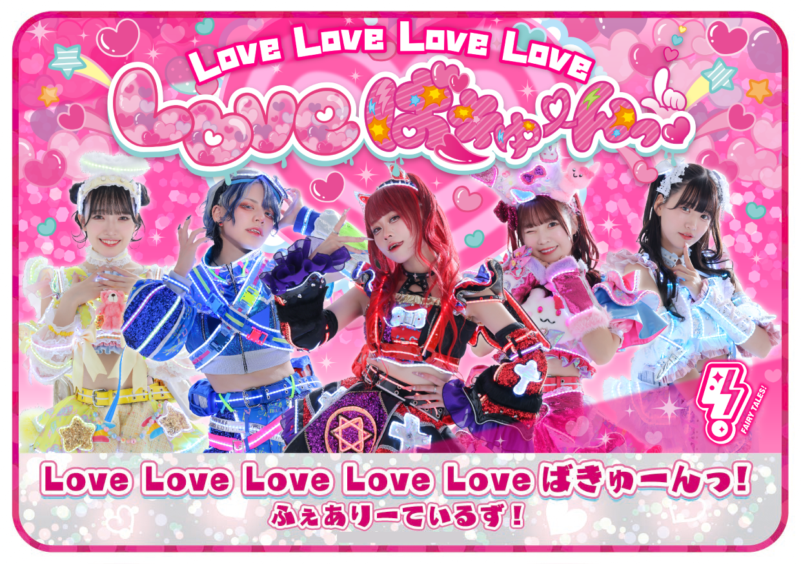
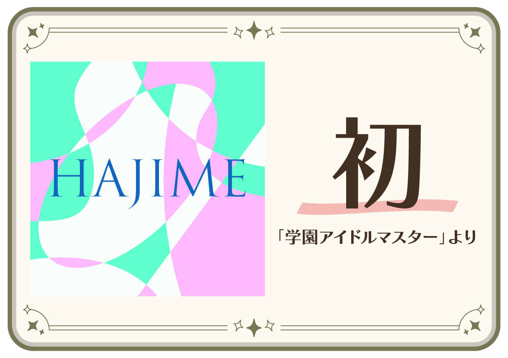
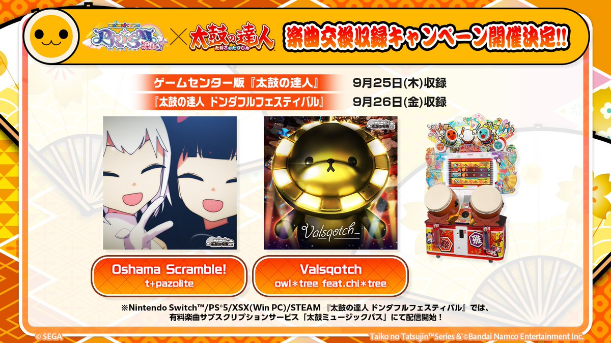
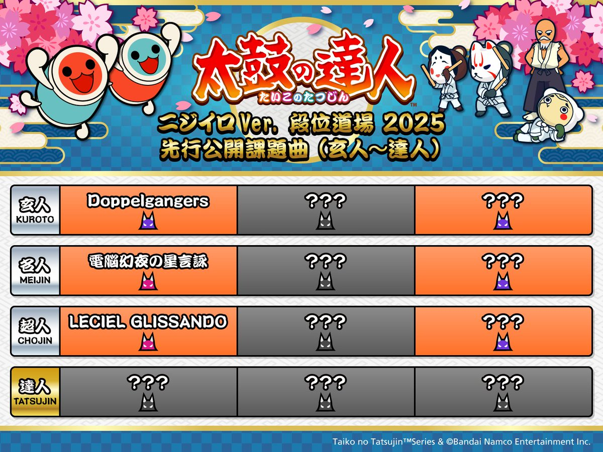
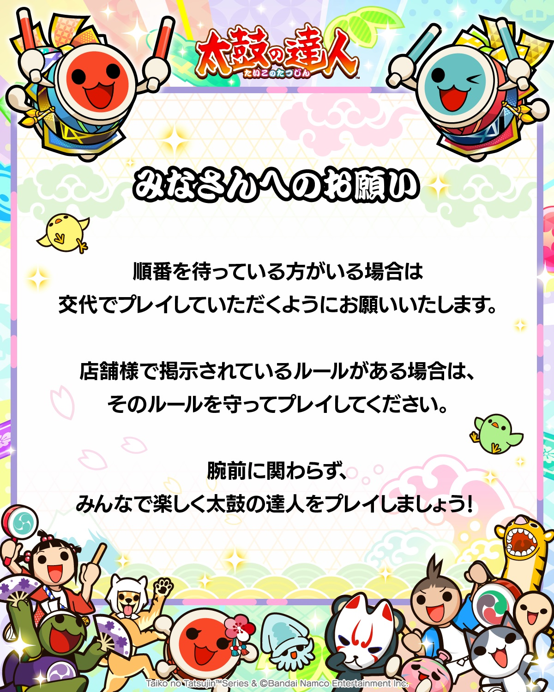
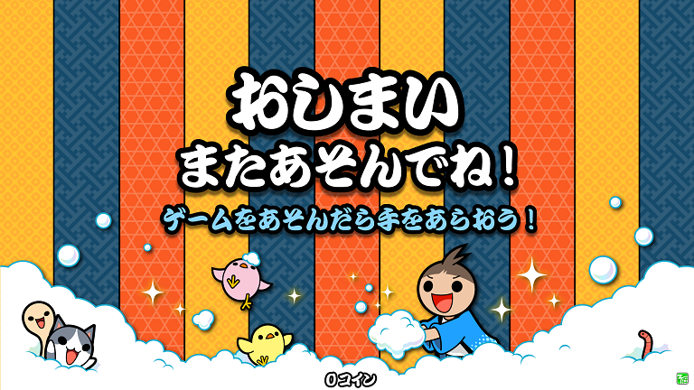

2025年09月11日
カテゴリー : 太鼓の達人
2025/9/11（木) 太鼓の達人 ニジイロ プラス Ver. アップデートのお知らせ ＆ 「太鼓の達人 公式生配信 エっ！トウとう段位道場後半なのカッ！！最新情報盛りだくさんビーム」 おさらい！
みなさん、こんにちは！
お知らせ担当の１１号です。
夏はおでかけしましたか？ 私は屋外の大きなプールに行ってきました！
ぐるぐる流されたり～、波に揺られたり～、高いところから流されたり～
テンション上がってラッシュガードなしでいたら、後日もれなく日焼けしてました。
まだまだ暑いですので、夏延長戦！という事で。 太鼓の達人でも夏の想い出作っちゃいましょう♪
それではお知らせスタート♪
■ 次回アップデートは、9/11（木）

太鼓の達人 ニジイロver. の、次回アップデート予定日が、9/11（木）に決定！
アップデート日から遊べる新曲はコチラ！！
.
▼ ポップス ▼
怪獣 ／ 「チ。 ―地球の運動について―」より
Love Love Love Love Loveばきゅーんっ！ ／ ふぇありーているず！
.
▼ゲームミュージック▼
初 ／ 「学園アイドルマスター」より
.
.


※ 日本版以外へは後日の楽曲収録を予定しています。
※ 一部の楽曲について、一部の国や地域のみで収録の場合があります。
■ maimai でらっくす × 太鼓の達人 楽曲交換収録キャンペーン開催決定！！
ついに！その日が来ました！ maimai でらっくす × 太鼓の達人 楽曲交換収録キャンペーン開催決定～～～！（パチパチパチ～～～！！）
2025年9月26日(金)より、maimai でらっくすの楽曲が【日本】で収録が決定しました！！
▼ゲームミュージック▼
Valsqotch ／ owl＊tree feat.chi＊tree 「maimai でらっくす」より
Oshama Scramble! ／ t+pazolite 「maimai でらっくす」より
※ 日本版以外へは後日の楽曲収録を予定しています。
※ 一部の楽曲について、一部の国や地域のみで収録の場合があります。
どんな譜面になるのかワクワクしながらお待ちください！！
■「段位道場2025」最新情報！！
お待たせしました！段位道場2024【玄人～】！！
2025年9月20日(土)より【日本、ワールドワイド（中国内地以外）】で同時スタートに決定しましたー！！
『太鼓の達人 太鼓の達人 公式生配信 エっ！トウとう段位道場後半なのカッ！！最新情報盛りだくさんビーム』の決勝大会で発表した課題曲が収録されましたが、
みなさんはもうプレイしてくれましたカッ？？？
【8月9日 収録】Lightning Boys ／ さだきち
【8月16日 収録】案山子姫 -Princess Scarecrow- ／ はるなば feat. 石黒千尋
【8月23日 収録】ピッチフェイダ ／ Sho Okada(BNSI) feat. ボンジュール鈴木
先行収録された3曲は、どの段位にくるか予想しながら腕慣らししておいてくださいね！
段位道場2025玄人～】に登場する際には、「おに(裏)」譜面も追加されますので、
どうぞお楽しみに～♪彡
引き続き、こまめな手の消毒、手洗い・うがいなどなどで、衛生を保ちつつ、太鼓の達人をお楽しみくださいね！
みんなで楽しく太鼓の達人をプレイしてくださいね♪
またのニュースもお楽しみに！

